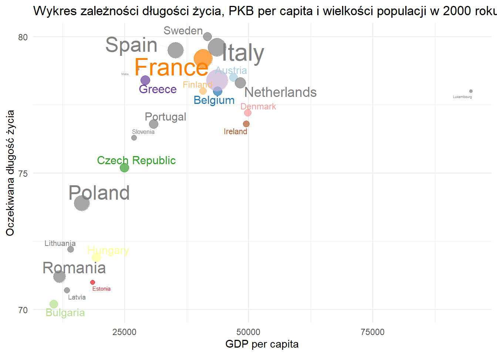
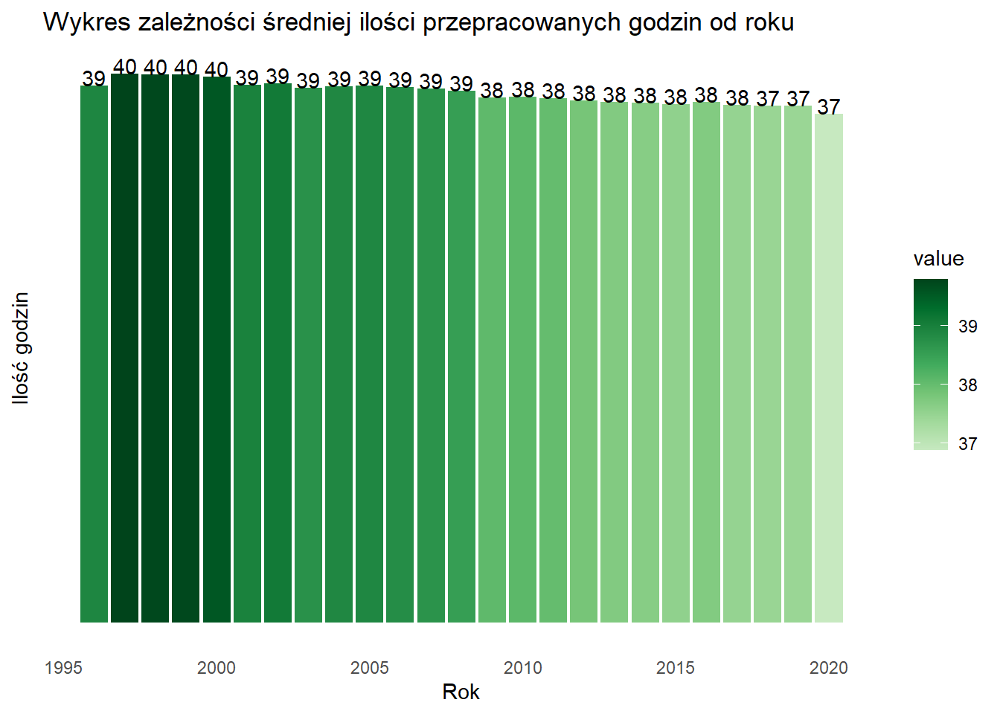
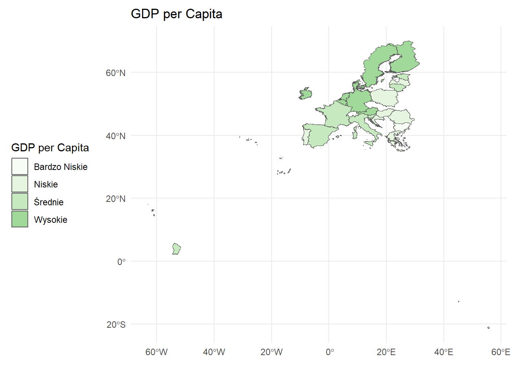

required.packages <- c("ggplot2", "dplyr", "tidyr", "psych", "countrycode", "stringr", "rnaturalearthdata", "rnaturalearth", "sf", "readr", "tmap", "tmaptools", "RColorBrewer", "sp", "classInt", "leaflet", "plotly",'ggrepel', "reactable" )
new.packages <- required.packages[!(required.packages %in% installed.packages()[,"Package"])]
if(length(new.packages)) install.packages(new.packages)
for(package_name in required.packages)
{
library(package_name,character.only=TRUE,quietly=TRUE);
}
library(reactablefmtr)
library(stringr)
library(janitor)
library(scales)Projekt_wizualizacja
Autorzy:
Aleksandra Andrzejewska i Karolina Kostrzewa
Dane
Dane do projektu zostały pobrane ze strony Gapminder.org. Zawierają one informacje o oczekiwanej długości życia, PKB per capita, ogólna populacja, oczekiwana długość życia dla kobiet i mężczyzn, śmiertelnośc dzieci poniżej 5-tego roku życia na 1000 urodzeń oraz średnią liczbę przepracowanych godzin w tygodniu.
Opis zmiennych
country - nazwa kraju
year - rok
lex - łączna oczekiwana długość życia
pop - populacja
gdp_pcap - PKB per capita
lex_female - oczekiwana długość życia dla kobiet
lex_male - oczekiwana długość życia dla mężczyzn
child_mort - śmiertelnośc dzieci poniżej 5-tego roku życia na 1000 urodzeń
work_h - średnia tygodniowa liczba przepracowanych godzin
Biblioteki
Przygotowanie danych
lex <- read.csv("../raw_data//Projekt/lex.csv")
pop <- read.csv("../raw_data/Projekt/pop.csv")
gdp_pcap <- read.csv("../raw_data/Projekt/gdp_pcap.csv")
lex_female <- read.csv("../raw_data/Projekt/life_expectancy_female.csv")
lex_male <- read.csv("../raw_data/Projekt/life_expectancy_male.csv")
child_mort <- read.csv("../raw_data/Projekt/child_mortality_0_5_year_olds_dying_per_1000_born.csv")
work_h <- read.csv('../raw_data/Projekt/working_hours_per_week.csv')# Przekształcenie danych
reshape_data <- function(data, value_name) {
data_long <- data %>%
mutate(across(everything(), as.character)) %>%
pivot_longer(cols = -country, names_to = "year", values_to = value_name)
# Wyciągnij rok z nazw kolumny (usuń "X") i konwertuj na char
data_long$year <- as.character(as.numeric(gsub("X", "", data_long$year), na.rm = TRUE))
return(data_long)
}
# Przekształć wczytane dane
lex_long <- reshape_data(lex, "lex")
pop_long <- reshape_data(pop, "pop")
gdp_pcap_long <- reshape_data(gdp_pcap, "gdpPercap")
lex_female_long <- reshape_data(lex_female, "lex_female")
lex_male_long <- reshape_data(lex_male, "lex_male")
child_mort_long <- reshape_data(child_mort, "child_mort")
work_h_long <- reshape_data(work_h, "work_h")# Połącz ze sobą dane
merged_data <- lex_long %>%
left_join(pop_long, by = c("country", "year")) %>%
left_join(gdp_pcap_long, by = c("country", "year")) %>%
left_join(lex_female_long, by = c("country", "year")) %>%
left_join(lex_male_long, by = c("country", "year")) %>%
left_join(child_mort_long, by = c("country", "year")) %>%
left_join(work_h_long, by = c("country", "year"))# Konwersja kolumny pop
merged_data <- merged_data %>%
mutate(pop = gsub("M", "e6", pop)) %>%
mutate(pop = gsub("k", "e3", pop)) %>%
mutate(pop = as.numeric(pop))Warning: There was 1 warning in `mutate()`.
ℹ In argument: `pop = as.numeric(pop)`.
Caused by warning:
! pojawiły się wartości NA na skutek przekształcenia# Konwersja kolumny
merged_data <- merged_data %>%
mutate(gdpPercap = gsub("k", "e3", gdpPercap)) %>%
mutate(gdpPercap = as.numeric(gdpPercap))# Wybór danych z przedziału 1950-2050
merged_data_filtered <- merged_data %>%
filter(between(as.numeric(year), 1950, 2050))# Zapis gotowych danych do pliku
#write.csv(merged_data_filtered, "data_1950_2050.csv", row.names = FALSE)Ogólny przegląd danych
# View(merged_data_filtered)
data = data.matrix(merged_data_filtered)
describe(data) vars n mean sd median trimmed mad
country 1 19695 98.00 56.29 98 98.00 72.65
year 2 19695 51.00 29.16 51 51.00 37.06
lex 3 19416 356.94 111.40 379 364.93 105.26
pop 4 19572 23070854.86 59878103.97 5735000 10927291.86 7837023.60
gdpPercap 5 19695 17189.41 22449.40 8580 12582.22 9592.42
lex_female 6 19695 400.69 129.56 431 412.12 121.57
lex_male 7 19695 392.21 122.58 412 400.15 112.68
child_mort 8 19695 769.45 581.37 572 707.54 553.01
work_h 9 2026 104.09 40.33 100 102.63 38.55
min max range skew kurtosis se
country 1 195 194 0.00 -1.20 0.40
year 1 101 100 0.00 -1.20 0.21
lex 1 570 569 -0.63 -0.23 0.80
pop 3350 997000000 996996650 7.83 87.36 428006.57
gdpPercap 386 244000 243614 2.97 14.39 159.97
lex_female 1 636 635 -0.72 -0.22 0.92
lex_male 1 636 635 -0.58 -0.16 0.87
child_mort 1 2136 2135 0.72 -0.68 4.14
work_h 1 217 216 0.32 -0.13 0.90# Dodaj nazwę kontynentu
merged_data_filtered$continent <- countrycode(merged_data_filtered$country, "country.name", "continent")# Zapis gotowych danych do pliku z nazwą kontynentu
#write.csv(merged_data_filtered, "data_1950_2050_continent.csv", row.names = FALSE)Wczytanie danych i ich dalsza analiza
merged_data_filtered <- read.csv("data_1950_2050_continent.csv")# Lista wszystkich krajów w Unii Europejskiej
all_eu_countries <- c("Austria", "Belgium", "Bulgaria", "Croatia", "Republic of Cyprus",
"Czech Republic", "Denmark", "Estonia", "Finland", "France",
"Germany", "Greece", "Hungary", "Ireland", "Italy", "Latvia",
"Lithuania", "Luxembourg", "Malta", "Netherlands", "Poland",
"Portugal", "Romania", "Slovakia", "Slovenia", "Spain", "Sweden")
# Wyfiltruj dane dla wszystkich krajów z Unii Europejskiej
eu_data <- subset(merged_data_filtered, country %in% all_eu_countries)# Sprawdzanie gdzie i ile znajdują się wartości puste
#colSums(is.na(eu_data))
# Wyświetlenie wartości pustych
#subset(eu_data, is.na(work_h))# Usunięcie wartości pustych
europe_data <- na.omit(eu_data)# Przekształcenie na liczbę zmiennej gdpPercap
europe_data$gdpPercap <- as.numeric(str_replace_all(europe_data$gdpPercap, "[^0-9.]", ""))
europe_data$lex <- as.numeric(europe_data$lex)
# Przekształcenie kolumny pop
#europe_data$pop <- parse_number(europe_data$pop)
europe_data$child_mort <- as.numeric(europe_data$child_mort)#PKB per capita (kwartyle)
europe_data <- europe_data %>%
mutate(pkb_syt = case_when(
gdpPercap < quantile(gdpPercap, 0.25) ~ paste('Bardzo Niskie (', quantile(gdpPercap, 0.25), ')'),
gdpPercap >= quantile(gdpPercap, 0.25) & gdpPercap < quantile(gdpPercap, 0.5) ~ paste('Niskie (', quantile(gdpPercap, 0.5), ')'),
gdpPercap >= quantile(gdpPercap, 0.5) & gdpPercap < quantile(gdpPercap, 0.75) ~ paste('Średnie (', quantile(gdpPercap, 0.75), ')'),
gdpPercap >= quantile(gdpPercap, 0.75) ~ paste('Wysokie (', quantile(gdpPercap, 0.75), ')')
))# Zmiana typu
europe_data$year <- as.numeric(europe_data$year)
europe_data$lex <- as.numeric(europe_data$lex)
europe_data$lex_female <- as.numeric(europe_data$lex_female)
europe_data$lex_male <- as.numeric(europe_data$lex_male)
europe_data$work_h <- as.numeric(europe_data$work_h)Wizualizacja
Wykres 1
Ten wykres przedstawia zależność między PKB per capita a oczekiwaną długością życia dla różnych krajów w roku 2000. Każdy punkt na wykresie reprezentuje jeden kraj, gdzie osie X i Y odpowiadają odpowiednio PKB per capita i oczekiwanej długości życia. Rozmiar punktu odpowiada wielkości populacji danego kraju, a kolor punktu reprezentuje konkretny kraj.
# Tworzenie kopii danych i filtrowanie
filtered_data <- europe_data %>%
transmute(country, year, gdpPercap, lex, pop) %>%
filter(year == 2000) %>%
distinct(country, .keep_all = TRUE)
# Utworzenie innej palety kolorów dla punktów
point_colors <- scales::brewer_pal(palette = "Paired")(length(unique(filtered_data$country)))Warning in RColorBrewer::brewer.pal(n, pal): n too large, allowed maximum for palette Paired is 12
Returning the palette you asked for with that many colorsggplot(filtered_data, aes(x = gdpPercap, y = lex, size = pop, label = country, color = country)) +
geom_point(alpha = 0.7) + # Dodanie przejrzystości punktów
scale_size_continuous(range = c(1, 10)) +
labs(title = "Wykres zależności długości życia, PKB per capita i wielkości populacji w 2000 roku",
x = "GDP per capita",
y = "Oczekiwana długość życia") +
theme_minimal() +
scale_y_continuous(limits = c(70, 80), breaks = c(70, 75, 80)) +
scale_x_continuous(limits = c(min(filtered_data$gdpPercap), max(filtered_data$gdpPercap))) +
geom_text_repel(
box.padding = 0.2, # Dystans pomiędzy etykietami a punktami
segment.color = "grey", # Kolor linii łączących etykiety z punktami
segment.size = 0.2, # Grubość linii łączących etykiety z punktami
segment.alpha = 0.2 # Przejrzystość linii łączących etykiety z punktami
) +
scale_color_manual(values = point_colors) + # Ustawienie kolorów punktów
theme(legend.position = "none")Warning: ggrepel: 1 unlabeled data points (too many overlaps). Consider
increasing max.overlaps
Wykres 2
Wykres przedstawia średnią ilość przepracowanych godzin dla wszystkich krajów europejskich w poszczególnych latach od 1995 roku.
my_col_pal <- brewer.pal(9, "Greens")
filtered_data_w2 <- europe_data %>%
filter(year > 1995)
filtered_data_w2 %>%
group_by(year) %>%
summarise(work_h = mean(work_h, na.rm = TRUE)) %>%
pivot_longer(cols = work_h) %>%
ggplot() +
geom_col(aes(x = year, y = value, fill = value)) +
labs(title = "Wykres zależności średniej ilości przepracowanych godzin od roku",
x = "Rok",
y = "Ilość godzin") +
scale_fill_gradientn(colours = my_col_pal[3:9]) +
geom_text(aes(x = year, y = value, label = round(value)),
position = position_dodge(width = 0.5), vjust = 0) +
theme_minimal() +
theme(axis.text.y = element_blank(),
axis.ticks.y = element_blank(),
panel.grid = element_blank())
Wykres 3
kraje_sf <- read_sf("CNTR_RG_01M_2016_4326.shp") %>%
select(geometry, NAME_ENGL)Ten wykres przedstawia mapę Europy oraz terytoriów zależnych, na której kolory obszarów reprezentują kategorie PKB per capita. Kategorie te zostały utowrzone na podstawie kwartyli.
european_countries_sf <- kraje_sf %>%
filter(NAME_ENGL %in% all_eu_countries)
joined_data <- left_join(european_countries_sf, europe_data, by = c("NAME_ENGL" = "country"))
# Usuwanie brakujących wartości lub wartości NaN
joined_data <- na.omit(joined_data)
# Define the categories and their labels
pkb_categories <- c("Bardzo Niskie", "Niskie", "Średnie", "Wysokie")
# Define labels for the categories based on quantiles
joined_data$pkb_syt <- cut(joined_data$gdpPercap,
breaks = quantile(joined_data$gdpPercap, probs = c(0, 0.25, 0.5, 0.75, 1), na.rm = TRUE),
labels = pkb_categories,
include.lowest = TRUE)
# Define the colors manually as a named vector
pkb_colors <- setNames(my_col_pal[1:length(pkb_categories)], pkb_categories)
# Plot using ggplot2
ggplot() +
geom_sf(data = joined_data, aes(fill = pkb_syt)) +
scale_fill_manual(values = pkb_colors) +
labs(fill = "GDP per Capita", title = "GDP per Capita") +
theme_minimal() +
theme(legend.position = "left")
Tablica
Ta tablica reaktywna przedstawia różne wskaźniki związane z krajami Europy w roku 2000. Umieszczono procentową wartość dotyczącą dzieci, które zmarły poniżej 5 roku życia, a także populacje, pkb, oraz długość życia dla kobiet i mężczyzn.
my_col_pal <- brewer.pal(9, "Greens")
filtered_data_tab <- europe_data %>%
filter(year == 2000) %>%
distinct(country, .keep_all = TRUE) %>%
mutate(child_mort = (child_mort * 1000) / pop * 100)
reactable(
data = filtered_data_tab %>% select(country, child_mort, pop, gdpPercap, lex_female, lex_male),
defaultColDef = colDef(format = colFormat(digits = 0, locales = "en-GB"), width = 110),
columns = list(
country = colDef(name = "Kraj", width = 150),
child_mort = colDef("Śmiertelność dzieci (<5 lat) (%)",
format = colFormat(digits = 2)),
pop = colDef(name= "Populacja", style = color_scales(data = filtered_data_tab, colors = my_col_pal)),
gdpPercap = colDef(name = "Produkt Krajowy Brutto", style = color_scales(data = filtered_data_tab, colors = my_col_pal)),
lex_female = colDef(name = "Oczekiwana długość życia kobiet", style = color_scales(data = filtered_data_tab, colors = my_col_pal)),
lex_male = colDef(name = "Oczekiwana długość życia mężczyzn", style = color_scales(data = filtered_data_tab, colors = my_col_pal))
)
)